Machine Learning Analysis
This page includes an analysis performed on flu symptom data from this study. The complete analysis is available on my Github. This portion of the assignment explores three machine learning models: decision tree, LASSO, and random forest.
In this file, we will refine our analysis for this exercise and incorporate some machine learning models
Outcome of interest = Body temperature (continuous, numerical) - Corresponding model = regression - Performance metric = RMSE
load packages and data
library(ggplot2) #for plotting
library(broom) #for cleaning up output from lm()
library(here) #for data loading/saving## here() starts at /Users/ameliafoley/Desktop/MADA/AMELIAFOLEY-MADA-portfoliolibrary(tidymodels) #for modeling## Registered S3 method overwritten by 'tune':
## method from
## required_pkgs.model_spec parsnip## ── Attaching packages ────────────────────────────────────── tidymodels 0.1.4 ──## ✓ dials 0.0.10 ✓ rsample 0.1.0
## ✓ dplyr 1.0.7 ✓ tibble 3.1.5
## ✓ infer 1.0.0 ✓ tidyr 1.1.4
## ✓ modeldata 0.1.1 ✓ tune 0.1.6.9001
## ✓ parsnip 0.1.7.9001 ✓ workflows 0.2.4.9000
## ✓ purrr 0.3.4 ✓ workflowsets 0.1.0
## ✓ recipes 0.1.17.9000 ✓ yardstick 0.0.8## ── Conflicts ───────────────────────────────────────── tidymodels_conflicts() ──
## x purrr::discard() masks scales::discard()
## x dplyr::filter() masks stats::filter()
## x dplyr::lag() masks stats::lag()
## x recipes::step() masks stats::step()
## • Use tidymodels_prefer() to resolve common conflicts.library(rpart)##
## Attaching package: 'rpart'## The following object is masked from 'package:dials':
##
## prunelibrary(glmnet)## Loading required package: Matrix##
## Attaching package: 'Matrix'## The following objects are masked from 'package:tidyr':
##
## expand, pack, unpack## Loaded glmnet 4.1-3library(ranger)
library(rpart.plot) # for visualizing a decision tree
library(vip) # for variable importance plots##
## Attaching package: 'vip'## The following object is masked from 'package:utils':
##
## vi#path to data
#note the use of the here() package and not absolute paths
data_location <- here::here("files","processeddata_copy.rds")
#load cleaned data.
mydata <- readRDS(data_location)split data into train and test subsets
# set seed for reproducible analysis (instead of random subset each time)
set.seed(123)
#subset 3/4 of data as training set
data_split <- initial_split(mydata,
prop = 7/10,
strata = BodyTemp) #stratify by body temp for balanced outcome
#save sets as data frames
train_data <- training(data_split)
test_data <- testing(data_split)Cross validation
We want to perform 5-fold CV, 5 times repeated
#create folds (resample object)
set.seed(123)
folds <- vfold_cv(train_data,
v = 5,
repeats = 5,
strata = BodyTemp) #folds is set up to perform our CV
#linear model set up
lm_mod <- linear_reg() %>%
set_engine('lm') %>%
set_mode('regression')
#create recipe for data and fitting and make dummy variables
BT_rec <- recipe(BodyTemp ~ ., data = train_data) %>% step_dummy(all_nominal())
#workflow set up
BT_wflow <-
workflow() %>% add_model(lm_mod) %>% add_recipe(BT_rec)
#use workflow to prepare recipe and train model with predictors
BT_fit <-
BT_wflow %>% fit(data = train_data)
#extract model coefficient
BT_fit %>% extract_fit_parsnip() %>% tidy()## # A tibble: 32 × 5
## term estimate std.error statistic p.value
## <chr> <dbl> <dbl> <dbl> <dbl>
## 1 (Intercept) 98.4 0.294 334. 0
## 2 SwollenLymphNodes_Yes -0.140 0.112 -1.25 0.211
## 3 ChestCongestion_Yes 0.193 0.116 1.66 0.0972
## 4 ChillsSweats_Yes 0.185 0.155 1.19 0.234
## 5 NasalCongestion_Yes -0.275 0.137 -2.00 0.0456
## 6 Sneeze_Yes -0.469 0.118 -3.96 0.0000855
## 7 Fatigue_Yes 0.278 0.204 1.37 0.173
## 8 SubjectiveFever_Yes 0.483 0.123 3.92 0.000103
## 9 Headache_Yes -0.0169 0.150 -0.112 0.911
## 10 Weakness_1 0.370 0.194 1.91 0.0569
## # … with 22 more rowsNull model performance
#recipe for null model
null_train_rec <- recipe(BodyTemp ~ 1, data = train_data) #predicts mean of outcome
#null model workflow incorporating null model recipe
null_wflow <- workflow() %>% add_model(lm_mod) %>% add_recipe(null_train_rec)
# I want to check and make sure that the null model worked as it was supposed to, so I want to view the predictions and make sure they are all the mean of the outcome
#get fit for train data using null workflow
nullfittest <- null_wflow %>% fit(data = train_data)
#get predictions based on null model
prediction <- predict(nullfittest, train_data)
test_pred <- predict(nullfittest, test_data)
#the predictions for the train and test data are all the same mean value, so this tells us the null model was set up properly
#Now, we'll use fit_resamples based on the tidymodels tutorial for CV/resampling (https://www.tidymodels.org/start/resampling/)
#fit model with training data
null_fit_train <- fit_resamples(null_wflow, resamples = folds)## ! Fold1, Repeat1: internal: A correlation computation is required, but `estimate` is const...## ! Fold2, Repeat1: internal: A correlation computation is required, but `estimate` is const...## ! Fold3, Repeat1: internal: A correlation computation is required, but `estimate` is const...## ! Fold4, Repeat1: internal: A correlation computation is required, but `estimate` is const...## ! Fold5, Repeat1: internal: A correlation computation is required, but `estimate` is const...## ! Fold1, Repeat2: internal: A correlation computation is required, but `estimate` is const...## ! Fold2, Repeat2: internal: A correlation computation is required, but `estimate` is const...## ! Fold3, Repeat2: internal: A correlation computation is required, but `estimate` is const...## ! Fold4, Repeat2: internal: A correlation computation is required, but `estimate` is const...## ! Fold5, Repeat2: internal: A correlation computation is required, but `estimate` is const...## ! Fold1, Repeat3: internal: A correlation computation is required, but `estimate` is const...## ! Fold2, Repeat3: internal: A correlation computation is required, but `estimate` is const...## ! Fold3, Repeat3: internal: A correlation computation is required, but `estimate` is const...## ! Fold4, Repeat3: internal: A correlation computation is required, but `estimate` is const...## ! Fold5, Repeat3: internal: A correlation computation is required, but `estimate` is const...## ! Fold1, Repeat4: internal: A correlation computation is required, but `estimate` is const...## ! Fold2, Repeat4: internal: A correlation computation is required, but `estimate` is const...## ! Fold3, Repeat4: internal: A correlation computation is required, but `estimate` is const...## ! Fold4, Repeat4: internal: A correlation computation is required, but `estimate` is const...## ! Fold5, Repeat4: internal: A correlation computation is required, but `estimate` is const...## ! Fold1, Repeat5: internal: A correlation computation is required, but `estimate` is const...## ! Fold2, Repeat5: internal: A correlation computation is required, but `estimate` is const...## ! Fold3, Repeat5: internal: A correlation computation is required, but `estimate` is const...## ! Fold4, Repeat5: internal: A correlation computation is required, but `estimate` is const...## ! Fold5, Repeat5: internal: A correlation computation is required, but `estimate` is const...#get results
metrics_null_train <- collect_metrics(null_fit_train)
#RMSE for null train fit is 1.204757
#repeat for test data
null_test_rec <- recipe(BodyTemp ~ 1, data = test_data) #predicts mean of outcome
null_test_wflow <- workflow() %>% add_model(lm_mod) %>% add_recipe(null_test_rec) #sets workflow with new test recipe
null_fit_test <- fit_resamples(null_test_wflow, resamples = folds) #performs fit## ! Fold1, Repeat1: internal: A correlation computation is required, but `estimate` is const...## ! Fold2, Repeat1: internal: A correlation computation is required, but `estimate` is const...## ! Fold3, Repeat1: internal: A correlation computation is required, but `estimate` is const...## ! Fold4, Repeat1: internal: A correlation computation is required, but `estimate` is const...## ! Fold5, Repeat1: internal: A correlation computation is required, but `estimate` is const...## ! Fold1, Repeat2: internal: A correlation computation is required, but `estimate` is const...## ! Fold2, Repeat2: internal: A correlation computation is required, but `estimate` is const...## ! Fold3, Repeat2: internal: A correlation computation is required, but `estimate` is const...## ! Fold4, Repeat2: internal: A correlation computation is required, but `estimate` is const...## ! Fold5, Repeat2: internal: A correlation computation is required, but `estimate` is const...## ! Fold1, Repeat3: internal: A correlation computation is required, but `estimate` is const...## ! Fold2, Repeat3: internal: A correlation computation is required, but `estimate` is const...## ! Fold3, Repeat3: internal: A correlation computation is required, but `estimate` is const...## ! Fold4, Repeat3: internal: A correlation computation is required, but `estimate` is const...## ! Fold5, Repeat3: internal: A correlation computation is required, but `estimate` is const...## ! Fold1, Repeat4: internal: A correlation computation is required, but `estimate` is const...## ! Fold2, Repeat4: internal: A correlation computation is required, but `estimate` is const...## ! Fold3, Repeat4: internal: A correlation computation is required, but `estimate` is const...## ! Fold4, Repeat4: internal: A correlation computation is required, but `estimate` is const...## ! Fold5, Repeat4: internal: A correlation computation is required, but `estimate` is const...## ! Fold1, Repeat5: internal: A correlation computation is required, but `estimate` is const...## ! Fold2, Repeat5: internal: A correlation computation is required, but `estimate` is const...## ! Fold3, Repeat5: internal: A correlation computation is required, but `estimate` is const...## ! Fold4, Repeat5: internal: A correlation computation is required, but `estimate` is const...## ! Fold5, Repeat5: internal: A correlation computation is required, but `estimate` is const...metrics_null_test <- collect_metrics(null_fit_test) #gets fit metrics
#RMSE for null test fit is 1.204757The RMSE that we get for both the null test and null train models is 1.204757. We’ll use this later to compare to the performance of our real models (we want any real models to perform better than this null model).
Model tuning and fitting
Include: 1. Model specification 2. Workflow definition 3. Tuning grid specification 4. Tuning w/ cross-validation + tune_grid() ## Decision tree
#going based off of tidymodels tutorial: tune parameters
#since we already split our data into test and train sets, we'll continue to use those here. they are `train_data` and `test_data`
#model specification
tune_spec <-
decision_tree(
cost_complexity = tune(),
tree_depth = tune()
) %>%
set_engine("rpart") %>%
set_mode("regression")
tune_spec## Decision Tree Model Specification (regression)
##
## Main Arguments:
## cost_complexity = tune()
## tree_depth = tune()
##
## Computational engine: rpart#tuning grid specification
tree_grid <- grid_regular(cost_complexity(),
tree_depth(),
levels = 5)
tree_grid## # A tibble: 25 × 2
## cost_complexity tree_depth
## <dbl> <int>
## 1 0.0000000001 1
## 2 0.0000000178 1
## 3 0.00000316 1
## 4 0.000562 1
## 5 0.1 1
## 6 0.0000000001 4
## 7 0.0000000178 4
## 8 0.00000316 4
## 9 0.000562 4
## 10 0.1 4
## # … with 15 more rows#cross validation
set.seed(123)
cell_folds <- vfold_cv(train_data)
#workflow
set.seed(123)
tree_wf <- workflow() %>%
add_model(tune_spec) %>%
add_recipe(BT_rec)
#model tuning with `tune_grid()`
tree_res <-
tree_wf %>%
tune_grid(
resamples = cell_folds,
grid = tree_grid
)## ! Fold01: internal: A correlation computation is required, but `estimate` is const...## ! Fold02: internal: A correlation computation is required, but `estimate` is const...## ! Fold03: internal: A correlation computation is required, but `estimate` is const...## ! Fold04: internal: A correlation computation is required, but `estimate` is const...## ! Fold05: internal: A correlation computation is required, but `estimate` is const...## ! Fold06: internal: A correlation computation is required, but `estimate` is const...## ! Fold07: internal: A correlation computation is required, but `estimate` is const...## ! Fold08: internal: A correlation computation is required, but `estimate` is const...## ! Fold09: internal: A correlation computation is required, but `estimate` is const...## ! Fold10: internal: A correlation computation is required, but `estimate` is const...tree_res %>% collect_metrics()## # A tibble: 50 × 8
## cost_complexity tree_depth .metric .estimator mean n std_err .config
## <dbl> <int> <chr> <chr> <dbl> <int> <dbl> <chr>
## 1 0.0000000001 1 rmse standard 1.19 10 0.0531 Prepro…
## 2 0.0000000001 1 rsq standard 0.0289 10 0.00760 Prepro…
## 3 0.0000000178 1 rmse standard 1.19 10 0.0531 Prepro…
## 4 0.0000000178 1 rsq standard 0.0289 10 0.00760 Prepro…
## 5 0.00000316 1 rmse standard 1.19 10 0.0531 Prepro…
## 6 0.00000316 1 rsq standard 0.0289 10 0.00760 Prepro…
## 7 0.000562 1 rmse standard 1.19 10 0.0531 Prepro…
## 8 0.000562 1 rsq standard 0.0289 10 0.00760 Prepro…
## 9 0.1 1 rmse standard 1.20 10 0.0558 Prepro…
## 10 0.1 1 rsq standard NaN 0 NA Prepro…
## # … with 40 more rows#Here we see 25 candidate models, and the RMSE and Rsq for each
tree_res %>% autoplot() #view plot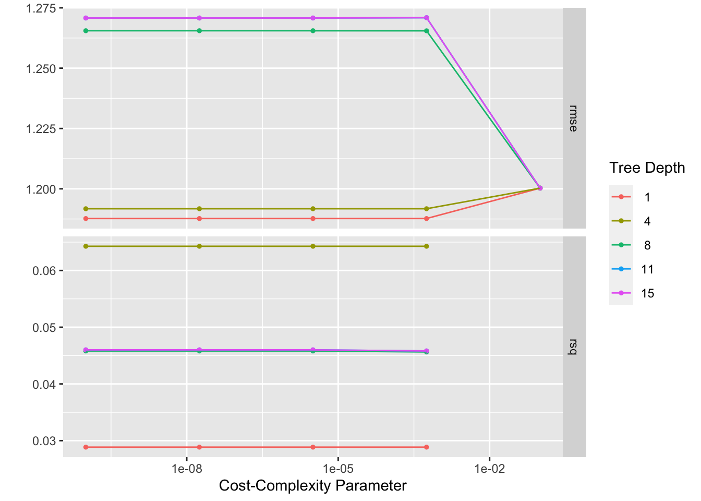
#select the best decision tree model
best_tree <- tree_res %>% select_best("rmse")
best_tree #view model details## # A tibble: 1 × 3
## cost_complexity tree_depth .config
## <dbl> <int> <chr>
## 1 0.0000000001 1 Preprocessor1_Model01#finalize model workflow with best model
tree_final_wf <- tree_wf %>%
finalize_workflow(best_tree)
#fit model
tree_fit <-
tree_final_wf %>% fit(train_data)
tree_fit## ══ Workflow [trained] ══════════════════════════════════════════════════════════
## Preprocessor: Recipe
## Model: decision_tree()
##
## ── Preprocessor ────────────────────────────────────────────────────────────────
## 1 Recipe Step
##
## • step_dummy()
##
## ── Model ───────────────────────────────────────────────────────────────────────
## n= 508
##
## node), split, n, deviance, yval
## * denotes terminal node
##
## 1) root 508 742.9363 98.93642
## 2) Sneeze_Yes>=0.5 280 259.6477 98.69107 *
## 3) Sneeze_Yes< 0.5 228 445.7356 99.23772 *Decision tree plots
#diagnostics
autoplot(tree_res)
#calculate residuals - originally got stuck trying out lots of different methods for this. took inspiration from Zane's code to manually calculate residuals rather than using some of the built in functions that I could not get to cooperate
tree_resid <- tree_fit %>%
augment(train_data) %>% #this will add predictions to our df
select(.pred, BodyTemp) %>%
mutate(.resid = BodyTemp - .pred) #manually calculate residuals
#model predictions from tuned model vs actual outcomes
tree_pred_plot <- ggplot(tree_resid, aes(x = BodyTemp, y = .pred)) + geom_point() +
labs(title = "Predictions vs Actual Outcomes: Decision Tree", x = "Body Temperature Outcome", y = "Body Temperature Prediction")
tree_pred_plot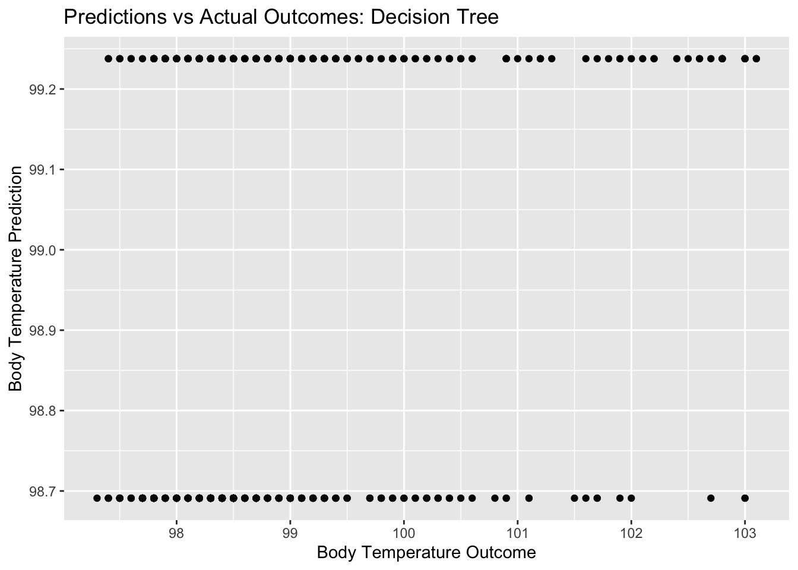
#plot residuals vs predictions
tree_resid_plot <- ggplot(tree_resid, aes(y = .resid, x = .pred)) + geom_point() +
labs(title = "Predictions vs Residuals: Decision Tree", x = "Body Temperature Prediction", y = "Residuals")
tree_resid_plot #view plot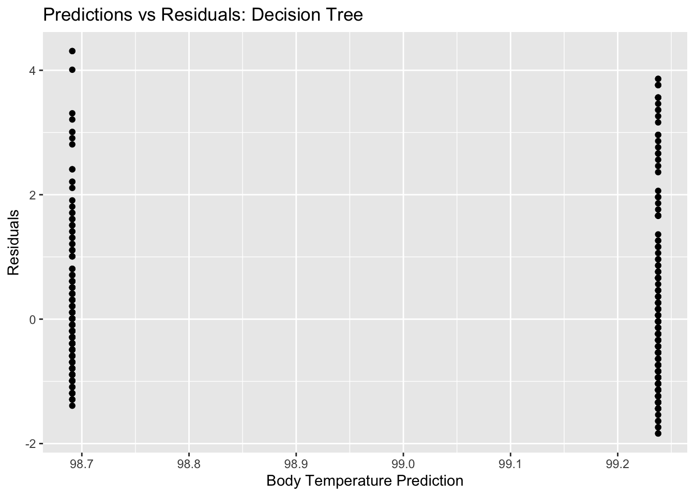
#compare to null model
metrics_null_train #view null RMSE for train data## # A tibble: 2 × 6
## .metric .estimator mean n std_err .config
## <chr> <chr> <dbl> <int> <dbl> <chr>
## 1 rmse standard 1.21 25 0.0171 Preprocessor1_Model1
## 2 rsq standard NaN 0 NA Preprocessor1_Model1tree_res %>% show_best(n=1) #view RMSE for best decision tree model## Warning: No value of `metric` was given; metric 'rmse' will be used.## # A tibble: 1 × 8
## cost_complexity tree_depth .metric .estimator mean n std_err .config
## <dbl> <int> <chr> <chr> <dbl> <int> <dbl> <chr>
## 1 0.0000000001 1 rmse standard 1.19 10 0.0531 Preprocesso…I am unsure if these plots look like what they are supposed to…and what exactly this means for our model. It is odd that there are only two different predictions (two distinct horizontal lines on the pred vs bodytemp plot) even with a range of actual outcome values. It looks like as a result, we also have two distinct vertical lines for our residuals plot, since we only had two different predictions.
For the performance comparison, we see a null RMSE of 1.2 and a decision tree RMSE of 1.18. These are very similar values
LASSO model
#based on tidymodels tutorial: case study
#model specification
lasso <- linear_reg(penalty = tune()) %>% set_engine("glmnet") %>% set_mode("regression")
#set workflow
lasso_wf <- workflow() %>% add_model(lasso) %>% add_recipe(BT_rec)
#tuning grid specification
lasso_grid <- tibble(penalty = 10^seq(-3, 0, length.out = 30))
#tuning with CV and tune_grid
lasso_res <- lasso_wf %>% tune_grid(resamples = cell_folds,
grid = lasso_grid,
control = control_grid(save_pred = TRUE),
metrics = metric_set(rmse))
#view model metrics
lasso_res %>% collect_metrics()## # A tibble: 30 × 7
## penalty .metric .estimator mean n std_err .config
## <dbl> <chr> <chr> <dbl> <int> <dbl> <chr>
## 1 0.001 rmse standard 1.16 10 0.0481 Preprocessor1_Model01
## 2 0.00127 rmse standard 1.16 10 0.0482 Preprocessor1_Model02
## 3 0.00161 rmse standard 1.16 10 0.0482 Preprocessor1_Model03
## 4 0.00204 rmse standard 1.16 10 0.0482 Preprocessor1_Model04
## 5 0.00259 rmse standard 1.16 10 0.0483 Preprocessor1_Model05
## 6 0.00329 rmse standard 1.16 10 0.0484 Preprocessor1_Model06
## 7 0.00418 rmse standard 1.16 10 0.0484 Preprocessor1_Model07
## 8 0.00530 rmse standard 1.16 10 0.0485 Preprocessor1_Model08
## 9 0.00672 rmse standard 1.16 10 0.0487 Preprocessor1_Model09
## 10 0.00853 rmse standard 1.16 10 0.0488 Preprocessor1_Model10
## # … with 20 more rows#select top models
top_lasso <-
lasso_res %>% show_best("rmse") %>% arrange(penalty)
top_lasso #view## # A tibble: 5 × 7
## penalty .metric .estimator mean n std_err .config
## <dbl> <chr> <chr> <dbl> <int> <dbl> <chr>
## 1 0.0281 rmse standard 1.15 10 0.0490 Preprocessor1_Model15
## 2 0.0356 rmse standard 1.15 10 0.0491 Preprocessor1_Model16
## 3 0.0452 rmse standard 1.15 10 0.0491 Preprocessor1_Model17
## 4 0.0574 rmse standard 1.15 10 0.0496 Preprocessor1_Model18
## 5 0.0728 rmse standard 1.15 10 0.0507 Preprocessor1_Model19#see best lasso
best_lasso <- lasso_res %>% select_best()
best_lasso #view## # A tibble: 1 × 2
## penalty .config
## <dbl> <chr>
## 1 0.0728 Preprocessor1_Model19#finalize workflow with top model
lasso_final_wf <- lasso_wf %>% finalize_workflow(best_lasso)
#fit model with finalized WF
lasso_fit <- lasso_final_wf %>% fit(train_data)LASSO plots
#diagnostics
autoplot(lasso_res)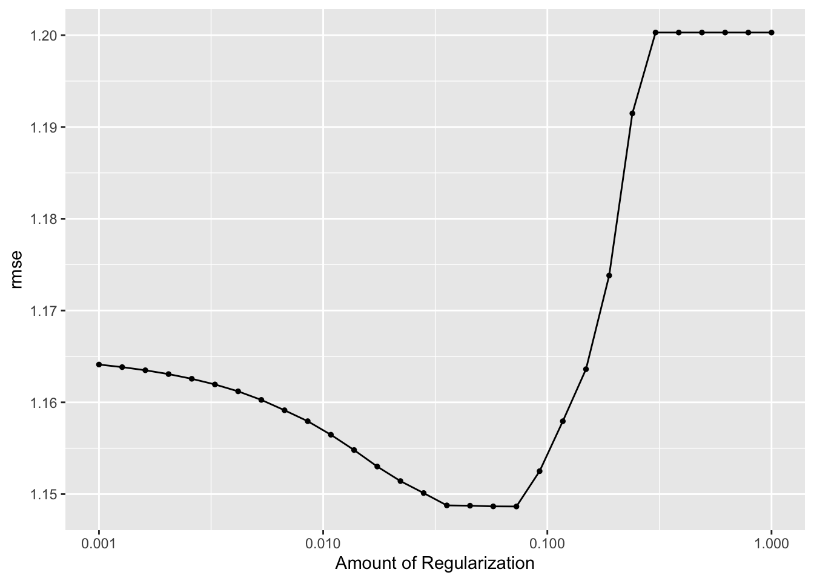
#calculate residuals
lasso_resid <- lasso_fit %>%
augment(train_data) %>% #this will add predictions to our df
select(.pred, BodyTemp) %>%
mutate(.resid = BodyTemp - .pred) #manually calculate residuals
#model predictions from tuned model vs actual outcomes
lasso_pred_plot <- ggplot(lasso_resid, aes(x = BodyTemp, y = .pred)) + geom_point() +
labs(title = "Predictions vs Actual Outcomes: LASSO", x = "Body Temperature Outcome", y = "Body Temperature Prediction")
lasso_pred_plot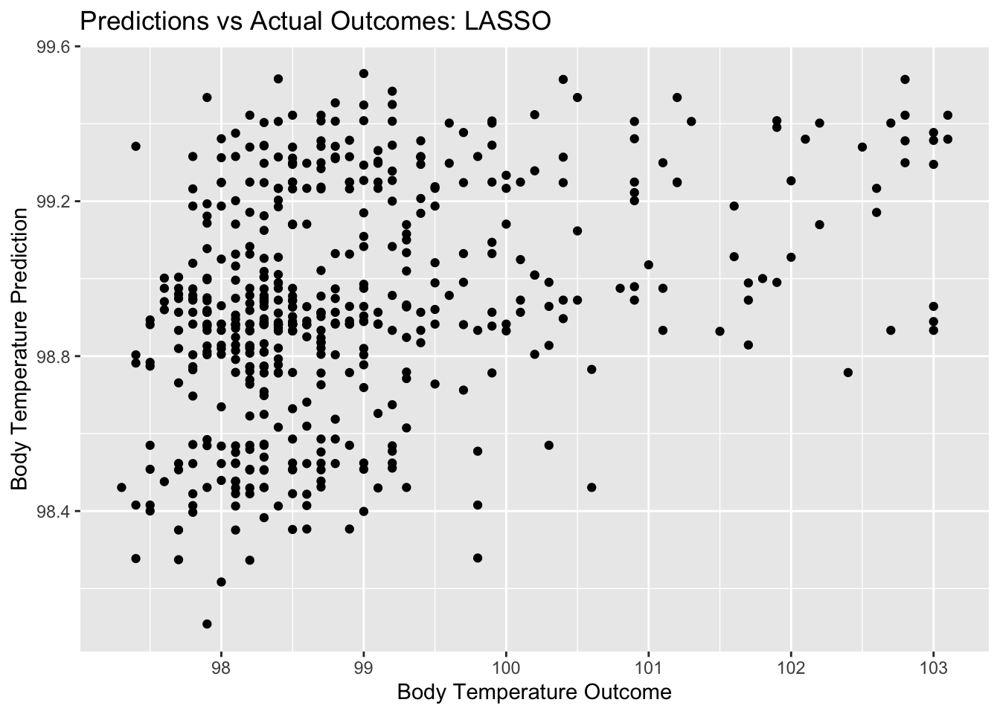
#plot residuals vs predictions
lasso_resid_plot <- ggplot(lasso_resid, aes(y = .resid, x = .pred)) + geom_point() +
labs(title = "Predictions vs Residuals: LASSO", x = "Body Temperature Prediction", y = "Residuals")
lasso_resid_plot #view plot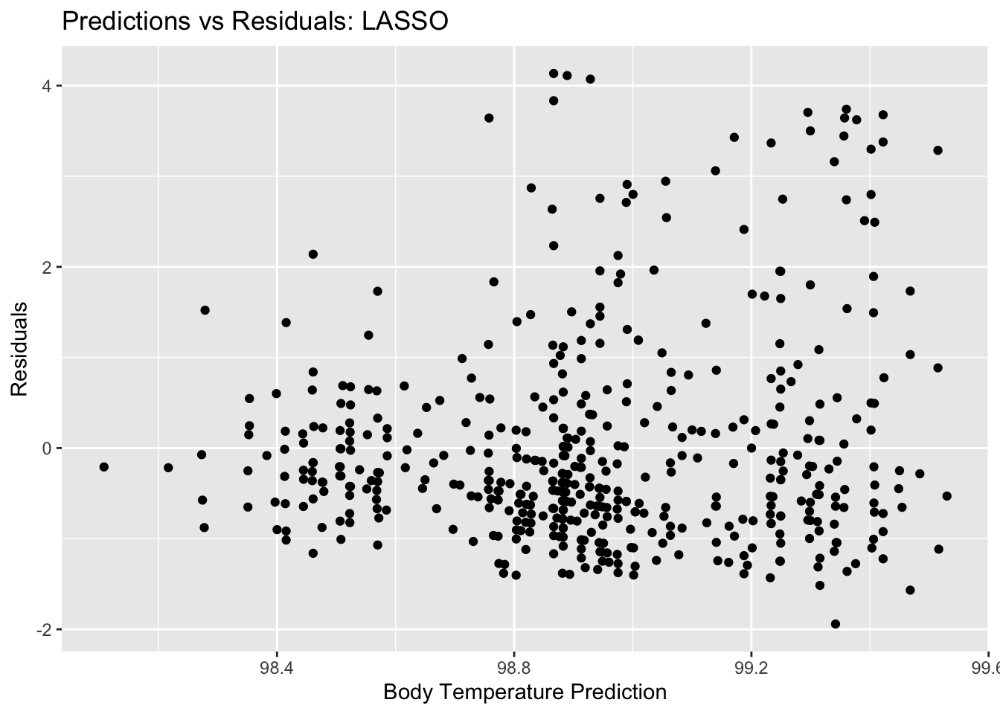
#compare to null model
metrics_null_train #view null RMSE for train data## # A tibble: 2 × 6
## .metric .estimator mean n std_err .config
## <chr> <chr> <dbl> <int> <dbl> <chr>
## 1 rmse standard 1.21 25 0.0171 Preprocessor1_Model1
## 2 rsq standard NaN 0 NA Preprocessor1_Model1lasso_res %>% show_best(n=1) #view RMSE for best lasso model## # A tibble: 1 × 7
## penalty .metric .estimator mean n std_err .config
## <dbl> <chr> <chr> <dbl> <int> <dbl> <chr>
## 1 0.0728 rmse standard 1.15 10 0.0507 Preprocessor1_Model19From these plots, we can tell the difference between the LASSO model and the decision tree model that we started with. There is clearly more variety in the predictions for this model, as well as for the residuals. Ultimately, we compare the RMSE for this LASSO model to the null model RMSE. The null model RMSE was 1.2, and the LASSO model RMSE is 1.14. This is a bit better of a model, but not by a whole lot. The
Random forest
#based on tidymodels tutorial: case study
library(parallel)
cores <- parallel::detectCores()
cores## [1] 8#model specification
r_forest <- rand_forest(mtry = tune(), min_n = tune(), trees = tune()) %>% set_engine("ranger", num.threads = cores) %>% set_mode("regression")
#set workflow
r_forest_wf <- workflow() %>% add_model(r_forest) %>% add_recipe(BT_rec)
#tuning grid specification
rf_grid <- expand.grid(mtry = c(3, 4, 5, 6), min_n = c(40,50,60), trees = c(500,1000) )
#what we will tune:
r_forest %>% parameters()## Collection of 3 parameters for tuning
##
## identifier type object
## mtry mtry nparam[?]
## trees trees nparam[+]
## min_n min_n nparam[+]
##
## Model parameters needing finalization:
## # Randomly Selected Predictors ('mtry')
##
## See `?dials::finalize` or `?dials::update.parameters` for more information.#tuning with CV and tune_grid
r_forest_res <-
r_forest_wf %>%
tune_grid(resamples = cell_folds,
grid = rf_grid,
control = control_grid(save_pred = TRUE),
metrics = metric_set(rmse))
#view top models
r_forest_res %>% show_best(metric = "rmse")## # A tibble: 5 × 9
## mtry trees min_n .metric .estimator mean n std_err .config
## <dbl> <dbl> <dbl> <chr> <chr> <dbl> <int> <dbl> <chr>
## 1 4 500 40 rmse standard 1.15 10 0.0532 Preprocessor1_Model02
## 2 6 1000 60 rmse standard 1.15 10 0.0527 Preprocessor1_Model24
## 3 5 1000 60 rmse standard 1.15 10 0.0533 Preprocessor1_Model23
## 4 6 500 60 rmse standard 1.15 10 0.0522 Preprocessor1_Model12
## 5 5 500 60 rmse standard 1.15 10 0.0534 Preprocessor1_Model11#view plot of models performance
autoplot(r_forest_res)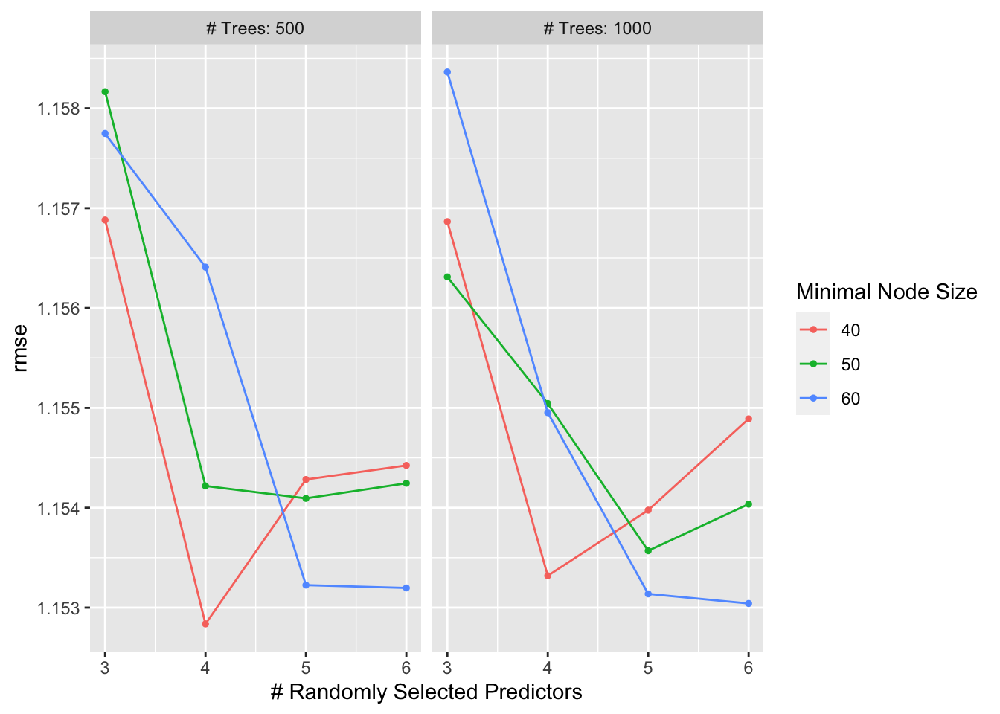
#select best model
rf_best <- r_forest_res %>% select_best(metric = "rmse")
rf_best## # A tibble: 1 × 4
## mtry trees min_n .config
## <dbl> <dbl> <dbl> <chr>
## 1 4 500 40 Preprocessor1_Model02#finalize workflow with top model
rf_final_wf <- r_forest_wf %>% finalize_workflow(rf_best)
#fit model with finalized WF
rf_fit <- rf_final_wf %>% fit(train_data)Random forest plots
#diagnostics
autoplot(r_forest_res)#calculate residuals
rf_resid <- rf_fit %>%
augment(train_data) %>% #this will add predictions to our df
select(.pred, BodyTemp) %>%
mutate(.resid = BodyTemp - .pred) #manually calculate residuals
#model predictions from tuned model vs actual outcomes
rf_pred_plot <- ggplot(rf_resid, aes(x = BodyTemp, y = .pred)) + geom_point() +
labs(title = "Predictions vs Actual Outcomes: Random Forest", x = "Body Temperature Outcome", y = "Body Temperature Prediction")
rf_pred_plot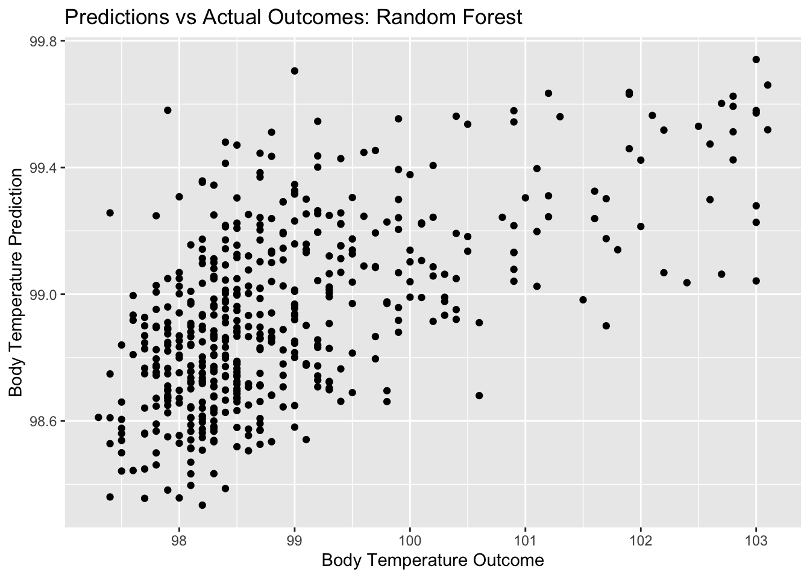
#plot residuals vs predictions
rf_resid_plot <- ggplot(rf_resid, aes(y = .resid, x = .pred)) + geom_point() +
labs(title = "Predictions vs Actual Outcomes: Random Forest", x = "Body Temperature Prediction", y = "Residuals")
rf_resid_plot #view plot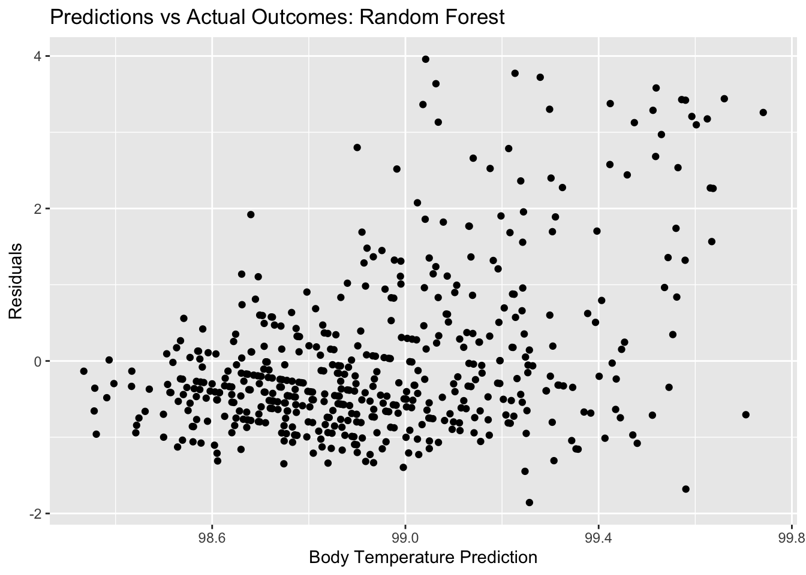
#compare to null model
metrics_null_train #view null RMSE for train data## # A tibble: 2 × 6
## .metric .estimator mean n std_err .config
## <chr> <chr> <dbl> <int> <dbl> <chr>
## 1 rmse standard 1.21 25 0.0171 Preprocessor1_Model1
## 2 rsq standard NaN 0 NA Preprocessor1_Model1r_forest_res %>% show_best(n=1) #view RMSE for best decision tree model## # A tibble: 1 × 9
## mtry trees min_n .metric .estimator mean n std_err .config
## <dbl> <dbl> <dbl> <chr> <chr> <dbl> <int> <dbl> <chr>
## 1 4 500 40 rmse standard 1.15 10 0.0532 Preprocessor1_Model02Here, we see that the random forest plots for residuals and outcomes vs predictors look somewhat similar to the LASSO plots, still quite different from the decision tree plots. Remember, the RMSE for our null model for the train data was 1.2. the RMSE that we get for our best random forest model is 1.15. It seems that the random forest performs better than the null and the better than the decision tree, but not by a lot. It has a similar performance to the LASSO model.
Model selection
#recall model performance metrics side by side
metrics_null_train #view null model performance## # A tibble: 2 × 6
## .metric .estimator mean n std_err .config
## <chr> <chr> <dbl> <int> <dbl> <chr>
## 1 rmse standard 1.21 25 0.0171 Preprocessor1_Model1
## 2 rsq standard NaN 0 NA Preprocessor1_Model1tree_res %>% show_best(n=1) #view RMSE for best decision tree model## Warning: No value of `metric` was given; metric 'rmse' will be used.## # A tibble: 1 × 8
## cost_complexity tree_depth .metric .estimator mean n std_err .config
## <dbl> <int> <chr> <chr> <dbl> <int> <dbl> <chr>
## 1 0.0000000001 1 rmse standard 1.19 10 0.0531 Preprocesso…lasso_res %>% show_best(n=1) #view RMSE for best lasso tree model## # A tibble: 1 × 7
## penalty .metric .estimator mean n std_err .config
## <dbl> <chr> <chr> <dbl> <int> <dbl> <chr>
## 1 0.0728 rmse standard 1.15 10 0.0507 Preprocessor1_Model19r_forest_res %>% show_best(n=1) #view RMSE for best random forest model## # A tibble: 1 × 9
## mtry trees min_n .metric .estimator mean n std_err .config
## <dbl> <dbl> <dbl> <chr> <chr> <dbl> <int> <dbl> <chr>
## 1 4 500 40 rmse standard 1.15 10 0.0532 Preprocessor1_Model02Our null model has an RMSE of 1.2 and std error of 0.017. Any model we pick should do better than that. Decision tree: RMSE 1.18, std err 0.053 LASSO: RMSE 1.14, std err 0.051 Random forest: RMSE 1.15, std err 0.053
While LASSO performs only slightly better than the random forest, it is the frontrunning model with the lowest RMSE model and lowest standard error. I will select the LASSO model as my top model for this data.
Final model evaluation
#fit to test data
last_lasso_fit <- lasso_final_wf %>% last_fit(data_split)
last_lasso_fit %>% collect_metrics()## # A tibble: 2 × 4
## .metric .estimator .estimate .config
## <chr> <chr> <dbl> <chr>
## 1 rmse standard 1.15 Preprocessor1_Model1
## 2 rsq standard 0.0284 Preprocessor1_Model1Here we see that the RMSE for the LASSO model on the test data (using function last_fit()) is 1.15…, which is very close to the RMSE we saw on the train data in the LASSO model. This is a reflection of good model performance. Let’s see some diagnostics for this final model.
Final model diagnostics/plots
#calculate residuals
final_resid <- last_lasso_fit %>%
augment() %>% #this will add predictions to our df
select(.pred, BodyTemp) %>%
mutate(.resid = BodyTemp - .pred) #manually calculate residuals
#model predictions from tuned model vs actual outcomes
final_pred_plot <- ggplot(final_resid, aes(x = BodyTemp, y = .pred)) + geom_point() +
labs(title = "Predictions vs Actual Outcomes: LASSO", x = "Body Temperature Outcome", y = "Body Temperature Prediction")
final_pred_plot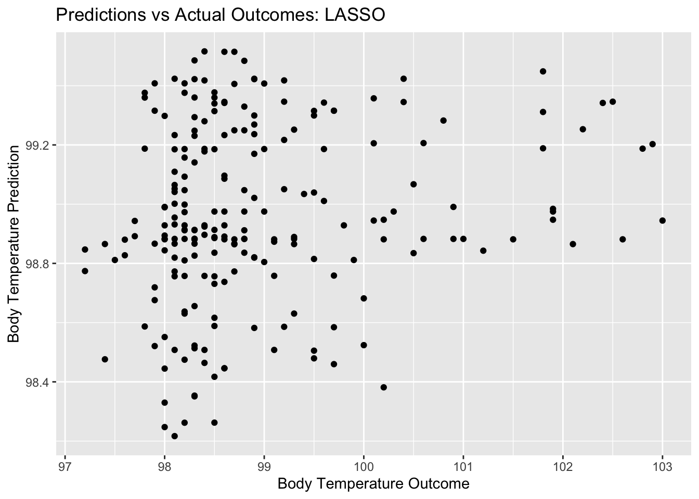
#plot residuals vs predictions
final_resid_plot <- ggplot(final_resid, aes(y = .resid, x = .pred)) + geom_point() +
labs(title = "Predictions vs Residuals: LASSO", x = "Residuals", y = "Body Temperature Prediction")
final_resid_plot #view plot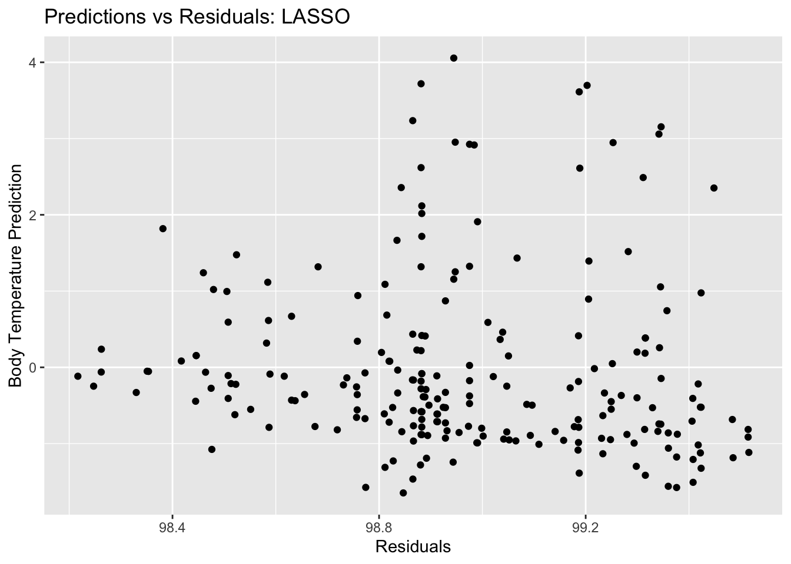
#compare to null model
metrics_null_train #view null RMSE for train data## # A tibble: 2 × 6
## .metric .estimator mean n std_err .config
## <chr> <chr> <dbl> <int> <dbl> <chr>
## 1 rmse standard 1.21 25 0.0171 Preprocessor1_Model1
## 2 rsq standard NaN 0 NA Preprocessor1_Model1last_lasso_fit %>% collect_metrics() #view RMSE for final model## # A tibble: 2 × 4
## .metric .estimator .estimate .config
## <chr> <chr> <dbl> <chr>
## 1 rmse standard 1.15 Preprocessor1_Model1
## 2 rsq standard 0.0284 Preprocessor1_Model1